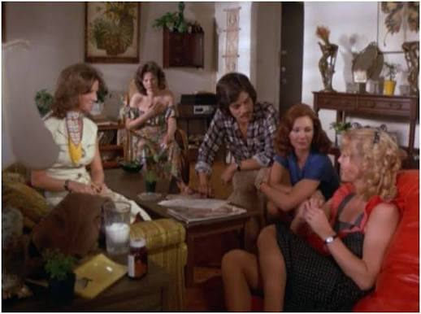

THE MILLION DOLLAR RIP-OFF (1976) — CERTIFIED MGC F-12

🏛 MGC LOWER COURT OF APPEALS
- ASSET TITLE: The Million Dollar Rip-Off (1976) – The Official Chicago Transit Capers
- OFFICIAL REGISTRY GRADE: Certified MGC F-12 (Fine / Even, Uniform Circulation Wear)
- LOWER COURT JURISDICTION: Judge Tina, Chief of Cult Classics
- CASE FILE: #028
📜 THE FORENSIC NARRATIVE BREAKDOWN & RECOVERY
Tina steps up to the bench, snaps her gold-mounted claw hammer into her palm, and examines this rare, television-minted 1976 Chicago transit alloy.
🚨 Key Planchet Flaws:
1. Uniform High-Point Friction & TV-Movie Planchet Limitations
- Under close inspection, The Million Dollar Rip Off displays the classic characteristics of a mid-1970s made-for-TV coin. The planchet is slightly thin due to its original network constraints (premiering on NBC), meaning the visual grain and lighting architecture don’t have the deep, theatrical strike depth of a big-budget feature film.
- The premise attempts to forge a high-concept Mission: Impossible style heist, where an ex-con electronics genius named Muff Kovak (Freddie Prinze) masterminds a payroll robbery of the Chicago Transit Authority alongside four female accomplices. While the Watergate-era wiretapping, blue-box electronics hacking, and rapid-fire costume changes carry immense historical luster, the structural composition is capped at a breezy 73-minute running time. This tight network runtime creates a sharp narrative bottleneck in the third act, forcing the actual execution of the heist to resolve with a highly accelerated, simplified payout sequence.
2. Distinct Circulation Scuffs: The “Charlie’s Angels” Clone Matrix
- The character profiles represent a well-worn, highly circulated set of 1970s television archetypes. Freddie Prinze turns in his only film role of any kind, delivering a remarkably laid-back, charmingly charismatic strike that heavily balances out the script’s generic dialogue. He is beautifully contrasted by Allen Garfield, who delivers pure “walking ulcer” energy as the relentless, hyper-suspicious Lieutenant Ralph Fogherty.
- However, the four female accomplices (including Linda Scruggs and Joanna Kerns) are forced to operate inside a heavily scratched script surface. Instead of getting distinct, deep-strike backstories, they are utilized entirely like a calculated Charlie’s Angels or Mission: Impossible clone matrix—shuffled quickly between generic disguises and wiretapping rigs without any localized character development. This creates an even, uniform surface drag across the second-act pacing.
3. High-Velocity Historic Value & The Definitive F-12 Allocation
- Despite these noticeable structural scuffs and unpolished network production leaks, the asset holds its ground beautifully right at the firm MGC F-12 Fine line. The film completely avoids slipping down into the G or VG junk-box registers thanks to its pristine historical preservation of 1976 Chicago transit infrastructure. The location shooting provides incredible atmospheric eye appeal for collectors of vintage city aesthetics, backed by a delightful, bouncy electronic-infused score by the legendary Vic Mizzy. It is a highly collectible piece of cultural alloy—flawed by its small-screen boundaries, but retaining clear, highly satisfying details on all the major high points.
⚖️ THE CHIEF’S FINAL APPULATE VERDICT
- “The ledger is updated. The case file is complete. If you want a breezy, nostalgia-fueled 70s caper coin with an iconic, laid-back lead performance, this one sits proudly on the shelf!”
- 🔨💥👗 Case Closed. Certified MGC F-12.
Tina raises the heavy-iron claw hammer high above her head, her emerald eyes flashing with absolute, high-velocity judicial focus!

• © 2026 MOVIE GRADING CONSENSUS. All Sovereign Rights Reserved.